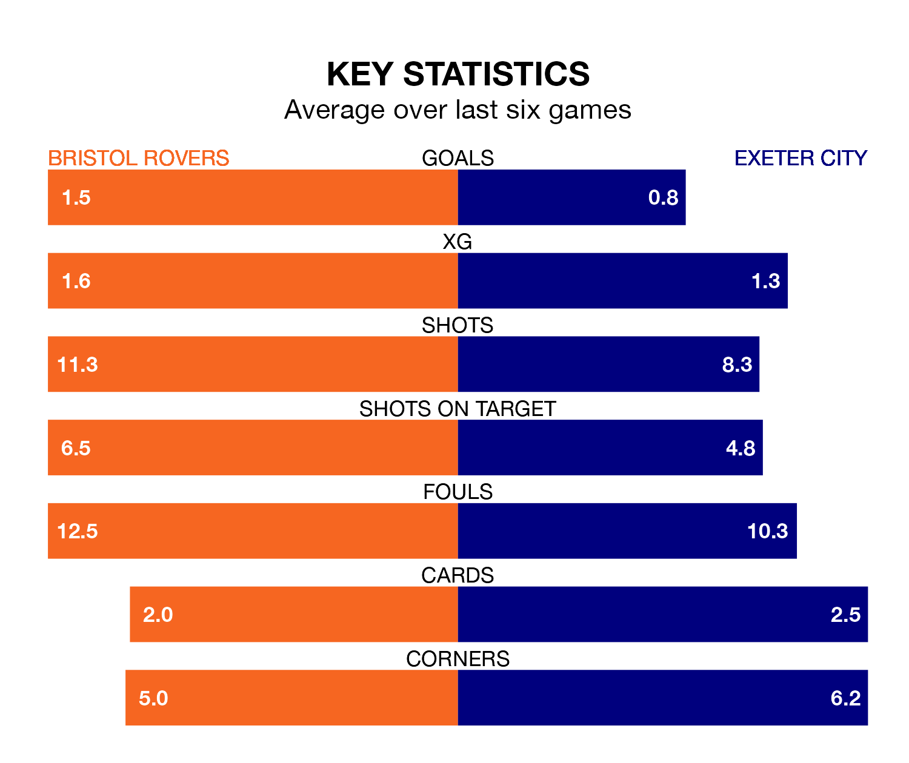

Bristol Rovers welcome Exeter City to the Memorial Stadium on late Tuesday looking to pick up points to end their three-game losing streak.
Rovers' struggles have left them with six points from their last six EFL League One matches, while their opponents have earned eight from a possible 18.
In the last 10 years, Rovers and Exeter have played each other on eight occasions. Rovers won one of them, Exeter four, and they drew three times.
On average, the Gas scored 1.8 goals and Exeter 2.5 in those matches.
Their last meeting was on December 29 2022, when Exeter won 4-3 away.
Exeter are 21st in the table after 27 games, of which they have won seven and drawn six, earning 27 points.
Rovers are eight places ahead of City in 13th, with nine wins and seven draws putting them on 34 points.
The Gas's Aaron Collins is the league's most creative player, racking up eight assists in 26 appearances so far this season.
For the away side, Demetri Mitchell has set up the most goals, having laid on three assists in 14 games.
With 18 goals in 27 games so far this season, Exeter are the league's joint-second-lowest scorers with 0.7 goals per game. And they are conceding more than average, letting in 39 goals at a rate of 1.4 per game.
The hosts, meanwhile, are above average scorers, with 1.4 goals per game, compared to a league average of 1.3. They have also conceded 1.4 goals per game.
Rovers' last match was on Saturday, a 2-1 loss against Blackpool, with Chris Martin getting the goal for the Gas.
Exeter drew 0-0 with Cambridge United last time out, also on Saturday.
Tuesday's match will be refereed by Jacob Miles, who has taken charge of five EFL League One games so far this season, issuing one red card and booking 26 players. He has awarded one penalty.
He is yet to oversee a match featuring either Rovers or Exeter this season.
Updated: 09:18 (UTC), 23/01/24